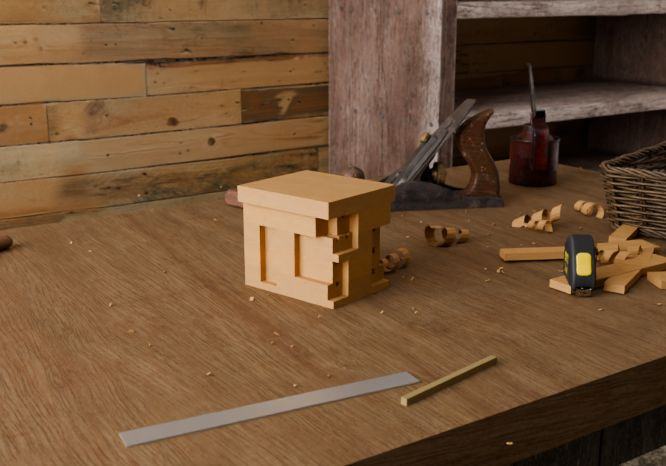
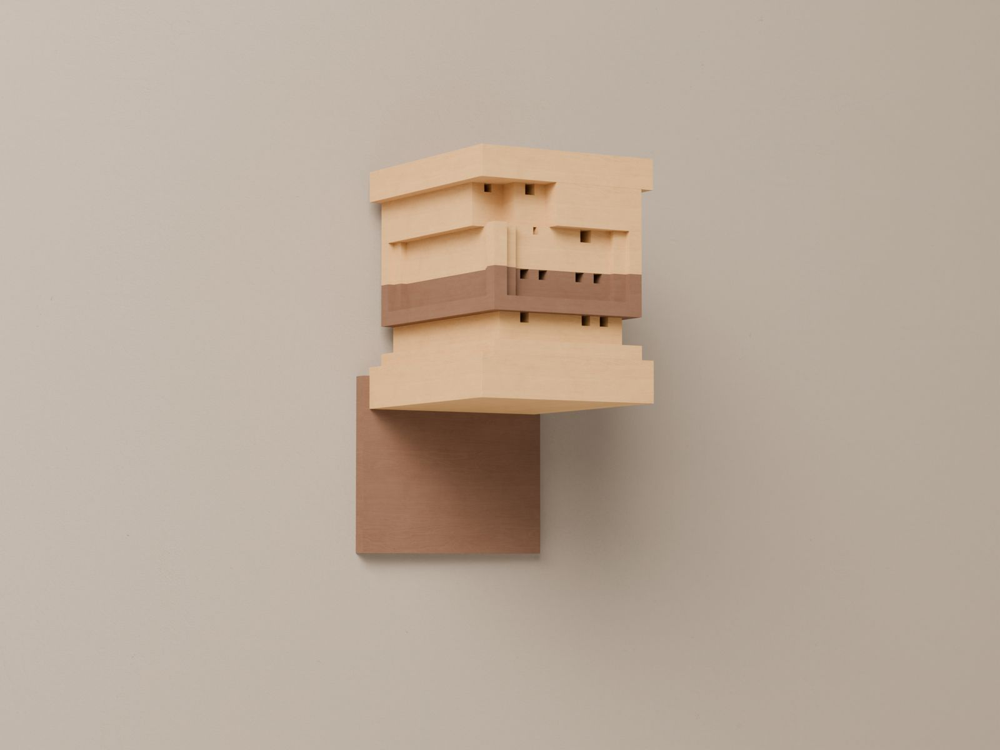

Design
Download & fabricate
We'll help you find a local space, and they'll help you create your Bee Home. Most makerspaces have computer-controlled tools, including a CNC milling machine, which is what you'll need to fabricate it.
A makerspace is an open workshop with access to a variety of fabrication tools. Think of a gym, but for makers, where you either have a membership or pay per visit. You also get a two-page spec sheet: cut list, elevations and the assembly order.

Assembly needs your hands, a drill and two screws
Place it
Place it anywhere, as long as it's outside. Make sure your Bee Home is protected from strong winds and that the holes remain horizontal at all times.
Assembling it requires just your hands and a few minutes of your time. To mount it on a wall, simply use a drill and two screws.

Questions
BEEHOME GEOMETRIES.3dm. The stacking rules are the recovered
ones. Two things are ours: the roof slab, which was generated at download
time by a Grasshopper definition we do not have, and the timber options,
which the original did not offer.Plant for them
Tell us roughly where you are. We'll name the cavity-nesting bees recorded near you, what they pollinate locally, and which seed to sow.
Solitary bees are friendly. They don't produce honey and therefore have nothing to protect. They only sting if trod on, and are safe to keep around kids and pets.
Keep scrolling. Bees see ultraviolet — many flowers print landing guides in it. Invisible to you, signage to her.
Concept pass. The Bee Home is rendered from the project's own geometry —
BEEHOME GEOMETRIES.3dm — not illustrated. Copy adapted from the
original beehome.design, recovered from the Wayback Machine. Plants are grown by a
bracketed L-system after Prusinkiewicz & Lindenmayer,
The Algorithmic Beauty of Plants.
CC BY 4.0 — SPACE10, Bakken & Bæck, Tanita Klein.